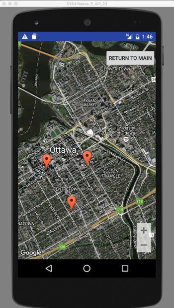
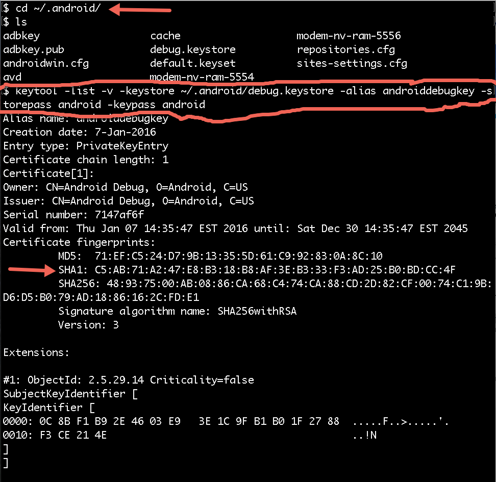

COMP 2601 Winter 2016
Ex 11 Google Maps API
© L.D. Nel 2016
Revisions -none yet
Description:
The purpose of this exercise is to explore the google maps API and introduce a couple of new components like: spinners and adapters.
To do this exercise you will need a signed API key. The instructions do getting one are describe in the preliminary section below.
The excersise also makes use of some components: map fragment, adapter, spinner. Here we will just use them, but pay attention to how they are used so you can do similar things in future assignments.
You need to demonstrate your exercise to the TA or Prof. before you leave the class to get credit for it. Marks: 2 or completion, 1 for partial progress, 0 for no show or no progress. (A mark of 1 can be upgraded to 2 is show us your completed work within one week of this exercise.)
Instructions:
Running On An AVD Emulator
Google maps is typically straight forward to run on a real device that has Google Play and Play Services installed, but if you planning to run on an AVD emulator there some additional steps you will need to set it up. At the end of this exercise is the description of what I did to get the completed app to work on an emulator.
When completed the app will allow you to select cities with spinner and bring up a map of their location. You will also be able to place markers on the map.

Exercise Problems
It's common for programmers to leave //TODO comments in their code. This exercise is described in terms of such //TODO comments left in the demo code. You can reveal their locations in android studio by click the TODO button at the bottom:
TODO #0: Create your signed API key:
For this exercise you will need to obtain a signed API key to use the google maps API. This is a two step process which involves first getting your project's SHA1 debug key and then using it so sign an API key. The API key you use in your app must be the one signed by your app.
The two steps are described here: https://developers.google.com/maps/documentation/android-api/signup#key
Here are screen captures of me doing the two steps on my mac.



TODO #1: Create Some City Locations.
In the createMapCoordinates() in Common.java add a few more cities like is done for Ottawa.
LatLng ottawa = new LatLng(45.4214, -75.6919);
mCityCoord.put("Ottawa", ottawa);
TODO #2: City Name Strings.
In strings.xml resource add city names from your createMapCoordinates hashmap to the city_names string array.
TODO #3: CitySpinner, MapButton.
In activity-main.xml add <Spinner> and <Button> resources. Label the button "Launch Map". In MainActivity provide instance variables Spinner mCitySpinner and Button mMapButton and inflate them with the appropriate findViewById().
When completed you MainActivty UI might look like this:

TODO #3: Listeners for Button, Spinner and an ArrayAdapter.
Examine the following android documentation
http://developer.android.com/guide/topics/ui/controls/spinner.html
to see how to create a spinner had have it populated using an array adapter. Add button and spinner listeners (and create an ArrayAdapter) to be used by the spinner. The spinner should be used to select a city. The button listener should be used to launch the MapActivity passing to it a city name (via intent bundle Common.LOCATION_BUNDLE containing a Common.STATE_CITY_NAME).
TODO #4: onMapReady Interface Method.
Have MapActivity implement the
com.google.android.gms.maps.OnMapReadyCallback
interface method onMapReady(GoogleMap googleMap) and have it make the map a hybrid type to show both satelite imagery and roads and also animate the camera to move to the chosen city.
Specifically examine the https://developers.google.com/android/reference/com/google/android/gms/maps/package-summary summary and, in particular, the com.google.android.gms.maps.OnMapReadyCallback interface and GoogleMap.animateCamera() public method.
Animating the camera would involve code structure like the following:
CameraPosition cameraPosition; //create appropriate camera position
mMap.animateCamera(CameraUpdateFactory.newCameraPosition(cameraPosition));
mMap.getUiSettings().setZoomControlsEnabled(true);
TODO #5: onMapClick Interface Method.
Have MapActivity implement the GoogleMap.onMapClick interface method to move the map location towards the new location of a short tap or click. Specifically examine the https://developers.google.com/android/reference/com/google/android/gms/maps/package-summary summary and, in particular, the GoogleMap.onMapClick interface and GoogleMap.animateCamera() public method.
When completed the map should move, or slide, to center the location you clicked on.
TODO #6: onMapLongClick method to add Markers.
Examine the https://developers.google.com/android/reference/com/google/android/gms/maps/package-summary summary and, in particular, the GoogleMap.onLongMapClick interface and GoogleMap.addMarker() public method.
Have the MapActivity implement onLongMapClick interface method to add a marker to the map when the user does a long click. Set the MapActivity instance to be the mMap's long click listener with mMap.setOnMapClickListener(...);
Also save the markers to the mMarkers hashmap maintained by the MainActivity. That way they will be there if you return to that map.
When completed you should both see the markers on the current map, and also if you return to that map.

When you have completed these problems demonstrate your code to the TA or Prof. to get credit for the tutorial.
Running On An AVD Emulator
Here are the steps I did to get the app to run on my emulator. If you find another approach please let us know.
Step 1) In SDK manager ensure that Google API's are installed in the android images you plan to use. (I did not try images earlier than API 22.)

Step 2) Create a new AVD with an image that includes Google API's

That was sufficient for me to run the completed app on an AVD: